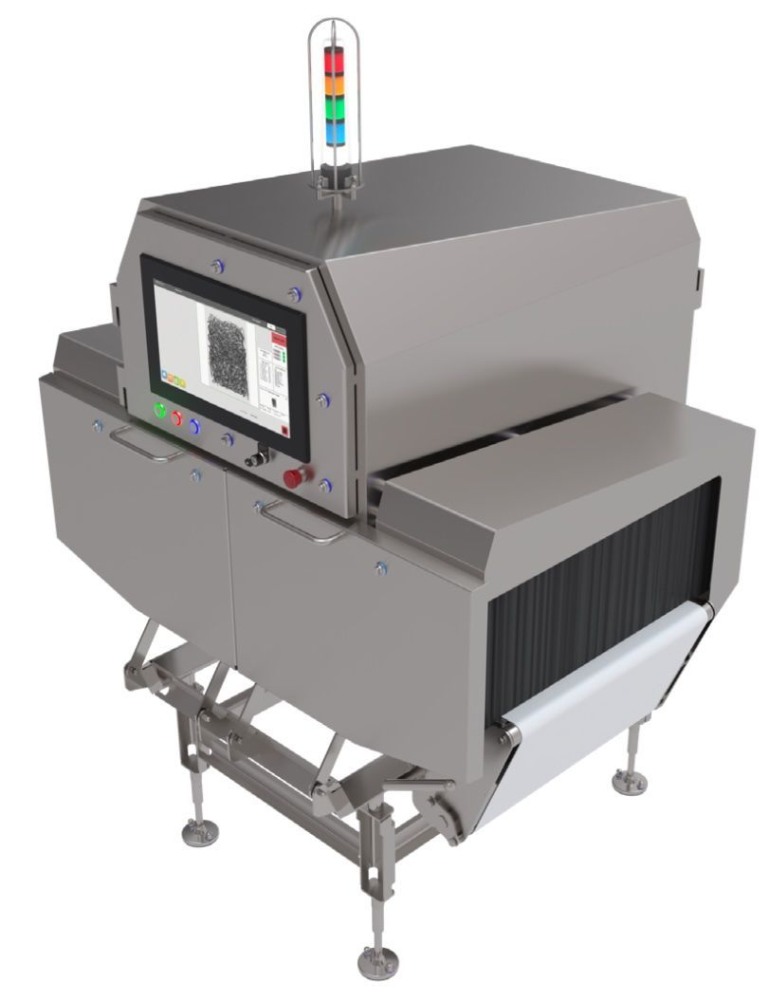

Contaminant uncertainty
Food safety teams need more than a binary reject. They need image evidence, event history, and context to quickly confirm or rule out foreign material.
Inspection intelligence for food production
GreyscaleAI combines high-resolution x-ray inspection, AI image analysis, machine monitoring, and GreyscaleAI Insights software to help food producers detect foreign material, understand product quality, and see what is happening across machines, lines, and plants.
Turn every inspected product into actionable data: detect foreign material, monitor product quality, and gain visibility across machines, lines, and plants.
The production problem
Traditional inspection systems are often treated as pass/fail equipment. They reject products, but they do not always help teams understand what is changing, where issues are developing, or what patterns are appearing across lines and plants.
Food safety teams need more than a binary reject. They need image evidence, event history, and context to quickly confirm or rule out foreign material.
Quality managers often miss density, shape, or fill problems until they become complaints. Seeing these patterns early helps prevent waste and rework.
Plant managers and maintenance teams cannot physically monitor every line. Remote insight into reject trends, alerts, and machine health saves time and cost.
Platform
Insights Software
A reject is only the beginning of the question. GreyscaleAI Insights helps teams see the image, review the event, track patterns, and understand whether the issue is foreign material, product quality drift, machine behavior, or process change.


Inspection as a Service
GreyscaleAI inspection systems are supported through our standard service agreement, which includes ongoing monitoring, technical support, software updates, analytics, and application support. Your team is not left alone with another complex system to manage.
Applications
Start with the outcome you need: safer product, more consistent quality, less giveaway, faster QA review, or better production visibility. GreyscaleAI connects inspection images, AI decisions, machine context, and Insights software so production teams can see what is changing and decide what to do next.
Review image-backed detection events for material risks such as metal, calcified bone, glass, stone, and dense objects where the application supports it.
Classify product and package conditions such as voids, clumps, broken pieces, missing components, dents, and product in the seal area.
See giveaway, underfill, count, presence, and checkweigher-related signals in context, without positioning GreyscaleAI as a replacement for a checkweigher.
Search inspection images, event records, challenge history, lot context, and review status when FSQA needs evidence.
Compare trends by product, line, shift, plant, time window, and reason code so recurring issues are easier to see.
Industries
Proof for production teams
An anonymized protein application used GreyscaleAI AI models to distinguish true bone from cartilage, ligament, tendon, and normal product variation, helping the team reduce unnecessary rejects while keeping sensitivity high.
Next step